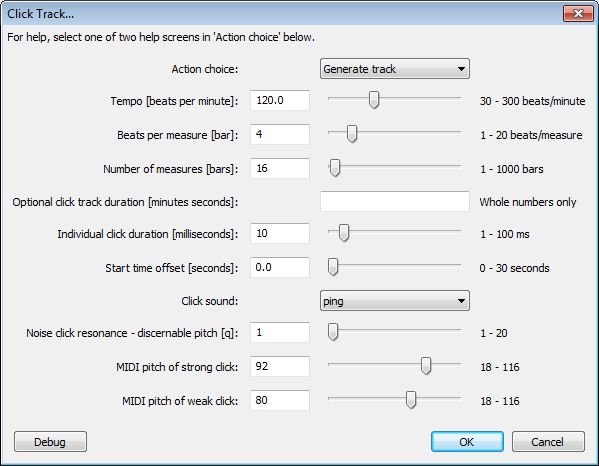

Click Track
From Audacity Manual
It can thus be used like a metronome for setting a steady beat against which an overdub recording can be made.
- Accessed by:
- 
Action choice
Choose "Generate Track" unless you want to select either of the two help screens.
Tempo [beats per minute]
The total number of beats (clicks) per minute, default is 120.
Beats per measure [bar]
The first beat of each measure is always louder than the remaining beats in the measure. So for example, three beats per measure will sound like a waltz in 3/4 time signature, and four beats per measure (the default) will sound like the 4/4 of a march or like most pop songs.
Number of measures [bars]
Beats per measure is repeated for the chosen number of measures. The default is 16 measures. The combination of tempo, beats per measure and number of measures determines the length of the generated track unless the click track duration is specified (see the next control).
Optional click track duration [minutes seconds]
If you enter a value into this field either [minutes seconds] separated by a space or simply [seconds], the generated click track will be at or slightly longer than this duration. The end of the track is extended into a whole measure if the entered duration does not produce a complete final measure. Use whole numbers only.
Individual click duration [milliseconds]
The duration of each individual click, from a minimum of 1 millisecond to a maximum of 100 milliseconds. The default is 10 milliseconds.
Start time offset [seconds]
Makes the click track start at a later point on the Timeline than the very beginning (zero seconds). The maximum of 30 seconds and the default is zero.
Click sound
Choose between a ping, noise or tick sound for clicks. The default is ping.
Noise click resonance - discernable pitch [q]
If noise is chosen for "Click sound", a high q value makes the clicks sound more clearly at the pitches chosen in the two MIDI pitch controls (see the next two controls). The q range is 1 to 20 and the default is 1.
MIDI pitch of strong click
The pitch of the first beat in each measure. The MIDI values indicate what pitch to use. Examples:
- C-notes are 24, 36, 48, 60 (middle C), 72, 84, 96, 108
- C# (C sharp) above middle C is 61
- The default is 92 (G#).
MIDI pitch of weak click
The pitch of the remaining beats in each measure. The default is 80 (G# an octave below the strong click).
- Once created, the track can be edited (for example, its volume changed) like any audio track.
- When exporting your finished work, use the Track Control Panel to either close or mute the Click Track, so that it's not audible in the exported file.